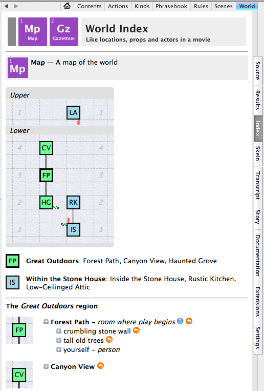

Chapter 2: Rooms & Scenery
As explained in Chapter 1 (see What Happens in a Game), the model world in which your story takes place will be divided neatly into rooms. For the purposes of IF, a “room” might be not a kitchen or living room but a football field or a phone booth.1 The same word is used in each case. Some people feel that the word “room” is misleading, but we have to call the places where things happen by some name or other, and the word “room” has been used for this purpose for a long time.
Although the characters (including the player) can travel from room to room, for most purposes other than travel we can think of each room as a sealed box. When the player is in a given room, she will be able to see, touch, and use the things that are in that room. But everything in every other room will be invisible and out of reach. In fact, if the player tries to refer to something that’s not in the current room, the parser (the software in the game engine that interprets what the player types) will usually pretend that the object the player referred to doesn’t exist.
This is usually what’s needed in a game, but sometimes having a room operate like a sealed container won’t give you the results you’re hoping for. If the “room” is a tree limb high in a tree, for example, when the player drops something we would expect it not to land on the limb. Rather, it should fall to the forest floor far below.
You’ll find that there are two or three ways to work around the limitations imposed by the sealed-room metaphor. If the player is at the north end of an open field, for instance, you may want him to be able to see (but not touch) the things that are at the south end of the field. Later in this chapter, in the section The Great Outdoors, we’ll suggest some ways to do this. There are also some exceptions that come into play when you’re designing a conversation system to let the player talk to other characters: You can easily allow ASK BOB ABOUT THE JEWELS to work as expected even if the jewels themselves are not in the room. (The techniques for doing this are explained in Chapters 4 and 5 – see Actions with Topics and Topics of Conversation.) In most situations, though, an object has to be in the room with the player in order for the player to do anything with it or even see it.
This concept is one of the most basic in interactive fiction. It’s called scope. An object is “in scope” if the player character can see and/or touch it; otherwise it’s “not in scope.” The parser is responsible for enforcing the rules of scope. If the parser pretends not to know about a given object when the player refers to it, it’s because the object is not in scope. This will most likely happen because the object is in a different room. But it can also happen because the object is in a closed container in the room. If the room is dark, the object might be in the room but not available for the player to interact with. If the player character is tied to a chair, things in the room may be visible (that is, in scope for purposes of the EXAMINE command) but not touchable. Enforcing the proper limitations on player interaction is partly handled by Inform, but as your story becomes more complex you may find that you need to handle some of the more awkward situations yourself.
By convention, everything in a room is assumed to be equally within reach of the player character, with a couple of exceptions. As we’ll see in Chapter 3, objects can be placed in locations that are out of reach, so that the player can look at them but not touch them. In addition, the player character may be seated on a chair or lying in a hammock in the room, in which case she will have to STAND UP before interacting with objects. In general, though, rooms have three standard characteristics: Everything in the room is equally available for examining, touching, or other manipulation; the player character is not facing any particular direction; and things that are dropped end up on the floor. All of these conventions can be changed, but experienced IF players will take them for granted, and there’s usually no need to concern yourself with them – especially not when writing your first game.
Creating Your First Room
Every Inform game has to have at least one room. Creating a room is easy; you do it like this:
This simple sentence produces an entire Inform game (though not a very interesting one). If you create a new game, type this sentence into the Source, and compile the game by clicking the Go button, you’ll find yourself in a (featureless) room called Forest Path.
It’s usually a good idea to capitalize the words in each room name. This is not required, it’s just a good habit to get into because it will produce a more professional-looking game. You can add “The” before the room name if you like. Inform will normally strip out the “The” before printing the room name in the game’s output, so a room you call The Forest Path will appear in the game as Forest Path. You can override this if you want to, though, using the printed name property, like this:
Notice the punctuation in that sentence: The period is outside the quotation mark, not inside. This is important. When Inform sees a period just before a close-quote, it will usually add an extra blank line in the game’s output each time it prints the text. This won’t happen when a room name is displayed – but even so, having room names that end with periods would be rather ugly. With a room name, putting the period outside the close-quote is the right thing to do.
You’ll almost always want to give each room its own description, to give the player some idea where she is. The description is text to be printed out, so you write it in double-quotes, like this, putting the description immediately after the sentence in which we created the room:
The first sentence creates a room called Forest Path. The second sentence, in quotes, is the description of the room. If you put the description immediately after the sentence that creates the room, Inform will know that it’s the description; you don’t need to do anything specific to tell Inform that the second sentence is the room description. (This bit of streamlined coding does not apply to other objects, as you’ll learn in the next chapter.)
If you’ve put something else between the sentence that creates the room and the description, however, you need to tell Inform what you’re doing. This won’t work:
Instead, you need to do it this way:
A room description can be as long or short as you like. It always has to end with a period (or with a question mark or exclamation point, though those aren’t used much in room descriptions.) In this case we want the period inside the quotation mark, because we want Inform to put a blank line after the description and before whatever is printed next.
In describing the room, you’ll almost always find yourself mentioning things that can be seen in the room. They may be important to the story, or they may be there simply to add color and atmosphere. The things that are mentioned in the room description are scenery.
In general, it’s a very good idea to add a separate scenery object (see the next section) for each thing that’s mentioned in a room description. The people who play your game don’t start out knowing what’s important in the story and what’s irrelevant, so players usually run around examining any object that’s mentioned in the game’s output – or trying to examine it. If the player tries to examine something that isn’t in scope, the parser will respond, “You can’t see any such thing.” If the thing has just been mentioned in the room description, this message is annoying, and your players will soon decide you’re not trying very hard. Imagine this situation in a game:
Forest Path
Tall old trees surround you.
x trees
You can’t see any such thing.
In the early days of interactive fiction, this type of response was considered normal, but at that time computers had much less memory. Game authors had to make the most of a tiny amount of text and a very small number of objects, so none could be wasted on irrelevant scenery. Today, failing to put the scenery into your rooms is considered poor form. In the next section of this chapter, we’ll look at how to add scenery.
It’s important to write room descriptions that give players a clear idea which directions are available for travel. That is, if the player can travel east, northeast, or west to reach other rooms, the room description should mention these directions and perhaps give some vague idea what lies in that direction:
Forest Path
Tall old trees surround you. The path runs roughly north and south
from here, and a little side path runs off through the bushes to the
northeast.
Failing to mention exits in the room description was used as a puzzle in some early games, but today this type of thing is generally considered rude and crude. Fortunately, there are extensions (such as Exit Lister by Eric Eve) that will put the room’s exits into the status line at the top of the game window. Using Exit Lister or something similar is a nice courtesy – but I feel it’s still a good idea to write a room description that describes all of the exits in a clear way (unless one of them is hidden as a puzzle). Exit Lister also provides a utility command for the player, EXITS, which will list the available exits to refresh the player’s memory.
Inform’s routines for printing out room descriptions are actually quite complex. After printing out the description you write, Inform will automatically mention anything in the room that it considers interesting – mainly people and visible objects (but not scenery; Inform assumes that the scenery needn’t be mentioned separately, presumably because you’ve already mentioned it in the room description). If you’ve added an object called a large toad to the room, Inform will know to mention it like this:
The Forest Path
Tall old trees surround you.
You can see a large toad here.
Inform uses certain rules for deciding how (or whether) to mention these things. If you want to customize the way room descriptions are printed out, see “Room Descriptions” at the end of this chapter.
1 A phone booth could also be created as an enterable container within the main room – see the section on “Enterable Containers & Supporters” in Chapter 3 of the Handbook. ↩︎
Scenery
Inform allows us to create many kinds of objects. The standard library includes containers, mechanical devices, doors, people, and so on. (See WI Chapter 4: Kinds to learn more about kinds.) The word “kind” is a technical term in Inform: It’s used to define new types of objects when the game will include several of them, and we want them to behave in similar ways. For instance, if a puzzle involves spelling words with alphabet blocks, we might do this:
After writing this, we could write rules that would apply to all alphabet blocks, and Inform would know what we were talking about. A trap that beginning Inform authors sometimes fall into is to use the word “kind” in the casual way that an English speaker would use it. For example:
Inform knows what an animal is, so this sentence will compile. But oddly enough, the sentence doesn’t create an object called a leopard. It creates a kind of object, on the assumption that you will later be writing about a small leopard, a large leopard, a spotless leopard, and a leaping leopard (or whatever), and that you plan to write some code that will be used by all of the objects of the leopard kind. If you want to create only one actual leopard, don’t use the word “kind”:
The first type of object we’re going to meet in this book is scenery. To make matters a little more confusing, however, the word “scenery” in Inform does not refer to a kind of object at all; it’s a property that can be applied to almost any object. A thing (the basic kind) can be scenery; a container or supporter can be scenery; a door can be scenery; a device can be scenery; and so on. Things, containers, supporters, doors, and devices are all different kinds.
If we don’t say anything more specific when creating scenery, Inform assumes that the object we’re creating is just an ordinary thing, not a device, door, or container. It also assumes that scenery is fixed in place: that it’s not something the player can pick up and carry around.
When your game is constructing a room description to print out, it will mention any ordinary objects that are lying around in the room, but it won’t mention scenery objects (unless the object is a supporter that has something else sitting on it; see Containers & Supporters for more on supporters). Inform assumes that you mentioned the scenery objects in your own room description when you wrote it, so be sure to do so.
We can add scenery to our forest path like this:
Now the player who types X TREES will be able to read a description that adds detail to the scene. Notice that here I’ve started the sentence by saying:
The phrase “The description is” is optional with scenery and rooms, but it’s required with objects that can be picked up and moved around (as described in Chapter 3). If you don’t use “The description is” with scenery, you should be sure to always put the description in the very next sentence after you’ve created the scenery object. The code below works exactly like what was shown above – but only with scenery, not with ordinary things.
The Names of Things
If you try out this code, you’ll soon discover two problems. First, you can X TREES, X TALL TREES, or X OLD TREES, because the scenery object was created with the name “tall old trees,” but you can’t X OAKS or X ANCIENT OAKS. The parser will reply, “You can’t see any such thing,” which is fairly silly. It happens – and this is important – because Inform never looks inside of double-quoted text to see what words you used there. Second, if you should try something like TAKE TREES, the parser will complain, “That’s hardly portable.” The word “trees” is plural, so the correct output would be “Those are hardly portable.” But the parser doesn’t know that the trees object is plural. We have to help it out a little.
To solve the first problem, we’ll add an Understand rule to the trees. You’ll soon find that most of the objects you create in your games will need Understand rules of this type. Their main purpose is to add vocabulary – extra words that the player can use to refer to the objects. (The concept of rules is vital to Inform. You’ll write many rules in your own code, and you’ll see them used throughout this Handbook. For more details, consult Chapter 19 of Writing with Inform.)
To solve the second problem, we need to make sure the parser understands that the tall old trees object is plural-named. There are two ways to do this. We can do it explicitly, by adding the sentence, “The tall old trees are plural-named” to our source. Or we can do it implicitly, by changing the sentence where we create the trees so that it refers to “Some tall old trees”. The second method is easier. Inform knows that when things are created using the word “some”, they’re plural-named. When we put it all together, the trees will look like this in our source code:
Notice that when we add vocabulary words to the trees object, we have to put the commas that separate items in the list of words outside the quotation marks.
This usage of “some” to create a plural-named object is convenient, but there’s a potential problem to be aware of. In English, some nouns are “collective.” Examples would include things like sand and water. If we write “Some sand is scenery in the Beach,” Inform will be confused into thinking the sand is plural-named. If it needs to construct a sentence that includes the sand object, it will say “The sand are…”. To avoid this, we need to create the sand using “the”, not “some” – and then we need to tell Inform to refer to the sand as “some sand” when it needs to construct a sentence, not as “a sand”. Here’s how to do it:
The term “indefinite article” refers, in English, to the words “a” and “an”. See WI 3.18: Articles and proper names for more on this technique.
Once we’ve created the tall old trees as a scenery object, we can refer to the object in our source code either as “tall old trees” or just as “trees”. The compiler will understand either form. However, You may want to get in the habit of always using the full names of objects when writing your game. If you use the short forms of names, Inform will usually understand what you meant, but it’s possible to end up with code that includes hard-to-find bugs.
The reason is this: You may have several objects in your game whose name ends with the noun “trees” – the tall old trees in the forest, the pear trees in the orchard, and the shoe trees in the closet. If you just say “trees” in your source code, the compiler will try to figure out which object you meant, and it will usually get it right. But once in a while it will get confused. The result could be disastrous: The player might try to pick up the shoe trees and end up carrying around the whole forest or the orchard by mistake.
For the same reason, it’s a good idea to get in the habit of naming every object with at least one adjective in addition to the noun. Odd things can happen if you have one object called the beach ball and another object that’s simply called the ball.
In case you’re wondering – no, it’s not possible to refer to the tall old trees in your own source code as “the ancient oaks”. Words in Understand rules are strictly for the player’s convenience, not for the author’s use.
At the beginning of the game, players don’t know what’s important. So they’ll try out anything they can think of. With the tall old trees, we can expect the player to try CLIMB TREES (or more likely, CLIMB TREE, as you can’t very well climb several trees at once). By default, this will be the output:
climb tree
I don’t think much is to be achieved by that.
There’s nothing wrong with this output, except that it’s boring. We can make it more interesting using an Instead rule:
The actual result in the game is the same as before: Nothing has happened. The player is still standing in the room called Forest Path. (And if the player tries X SPARROWS, there won’t be any sparrows in the room. We haven’t yet created any!) But the game is a little more interesting and fun than before. As you write messages like this, you might even start to wonder, what are those sparrows and wrens trying so hard to protect? This might suggest a puzzle that you can add to the game, such as scattering birdseed to distract the homicidal songbirds. After scattering the birdseed, the player might be allowed to climb a tree after all. But that type of complication will have to wait for a later chapter.
How Much Scenery Is Enough?
As noted in Chapter 1, in the section “The Detail Trap,” it’s easy to get sidetracked by trying to cram too much scenery into a room. If your story is set in a modern house, the house will probably have a bathroom. You may be tempted to add a toilet, toilet paper, a sink with faucets, a bar of soap, towels and washcloths on a towel rack, a mirror that opens to reveal a medicine cabinet stocked with pill containers, a bathtub with a showerhead and a drain. This level of detail is probably not necessary, and may even be a bad thing. It’s a lot of extra work – and if you include these objects, the player will expect that manipulating them will have something to do with the story. If they’re just scenery, the player will be disappointed not to be able to look at herself in the mirror, turn the faucets on and off, and so forth.
All the same, it’s jarring, if the game includes a bathroom, to see this kind of output:
Bathroom
A typical bathroom. The door is to the west.
x tub
You can't see any such thing.
x sink
You can't see any such thing.
x toilet
You can't see any such thing.
These responses destroy the illusion that the player is in a real room. A better approach is to create a single scenery object that stands in for all of the things in the room that aren’t important:
This preserves at least a thin illusion that the bathroom is a real place, while directing the player’s attention elsewhere.
Generally speaking, if an object is mentioned in the room description, it should probably be implemented as a separate scenery object. A “stand-in scenery object” like the one shown above would be a better choice for things that the player might naturally expect to be in this sort of room, but that aren’t important to the game.
Distant Scenery
It often happens, as you write a room description of an outdoor “room,” that you’ll want to mention things that are far away – visible, but not something that can be interacted with. Inform has no built-in way to handle this situation, but we can easily create one.
We’ll start by showing the problem, and then show how to fix it. Here is our first attempt at source code:
This code is fine, up to a point. The player can now examine the wall. But while the room description indicates that the wall is off in the distance, Inform doesn’t know that. The result, when the player tries doing things with the wall, is less than great:
x wall
The wall is ancient and moss-covered.
touch wall
You feel nothing unexpected.
take wall
That's hardly portable.
Obviously, the player character wouldn’t be able to touch the wall, because it has been described (in the room description) as far away. To solve this problem, we’re going to create a new property. Objects in Inform can have many properties. (You can view the properties of any object in the Game panel by typing SHOWME and the name of the object.) The printed name and description are properties, for instance. And creating new properties is easy. Let’s create an either/or property called distant/near. Every object in the model world will be either distant or near, but all of them will be near unless we say otherwise:
After creating distant as a property, we can make the stone wall (or anything else) distant, just by saying that it is. Now the output will be a lot more sensible:
touch wall
The crumbling stone wall is too far away.
The code above assumes that the distant thing will always be the first object the player refers to in an input. That is, it will be the direct object of the verb. In Inform source code, the direct object is referred to as the noun. If there’s another noun later in the command (usually it would be in a prepositional phrase), you would refer to it in your source as the second noun.
To be safe, we might also want to trap commands like PUT VASE ON STONE WALL. In this command, the stone wall is the second noun. To handle this, you can write:
This code won’t work well if the command involves, for instance, talking to an NPC about a distant thing. ASK GUARD ABOUT STONE WALL might produce the output, “The stone wall is too far away.” In fact, this will only happen if we’ve written our game so as to allow the ASK ABOUT action to refer to actual things, not just to topics. The way to do this is explained in Chapter 5, in the section Topics of Conversation. But wanting to exclude certain actions from an “Instead of doing anything” rule might come up in other situations too, so we’ll dig into it here. After creating an action called quizzing about, as explained in that section of Chapter 5, we could allow distant things to be quizzed about like this:
If you’re reading closely, you may wonder why the code above uses “[are]”, and why this produces the word “is” when you test the game. This is one of the newer features of Inform. We’ll have more to say about this type of text substitution in Chapter 9. The point of doing it this way is that Inform is smart enough to tell whether the object under discussion is singular or plural. It will select “is” or “are” as needed. If we just wrote, “[The second noun] is too far away”, distant things that were plural-named, such as geese winging across the sky, wouldn’t work quite right. We’d see this:
touch geese
The geese is too far away.
With the geese, we might prefer to create a distant thing called the flock of geese, and not make it plural-named (since “flock” is singular). A herd of cows could be handled the same way. But if you get in the habit of using this type of text substitution when writing default messages that may have to apply to a number of different objects, your game will read much more smoothly.
For a more complex way of creating an outdoor environment that includes items in other locations, see “Indoors & Outdoors” in Appendix B of this book.
At this writing, Jon Ingold’s Far Away extension, which is designed specifically to deal with things that are too far away to be touched, has not been upgraded for 6L38 compatibility. To learn how to update it (and other extensions), turn to Appendix B.
Addendum
Far Away is available for 9.3/6M62 and 10.1.
Once you’ve edited Far Away, it will do what we’ve been discussing in this section. Just put
near the top of your source code and then write a sentence saying that the crumbling stone wall is distant. With the extension in place, you won’t need to write your own Instead rules to produce “too far away” messages. You may want to do so for particular literary reasons. For example:
touch moon
The moon is much, much too far away!
But you won’t need to do that unless you want to.
Adding More Rooms to the Map
It’s possible to write a complete short game that takes place in a single room. But most games will need a number of rooms. The player travels from one room to another using standard compass directions – NORTH (or simply N), SOUTHWEST (SW), and so on.
Other methods of travel have been tried by various authors, and you may want to experiment with them at some point. In Blue Lacuna by Aaron Reed, you can travel from place to place by typing the name of something that lies in the direction that you want to go. In a game designed like this, CASTLE will take you closer to the castle (or cause you to enter it, if you’re already close), and so on. Aaron has released this system as Keyword Interface by Aaron Reed. You’ll find that it’s more complex than the average extension, so you should expect to do some study and some testing in order to get it to work the way you’d like it to in your game.
If your story is set aboard a ship, you may want to replace N, S, E, and W with FORWARD, AFT, PORT, and STARBOARD. (Example 42: Fore shows how to do this. WI 3.26: Directions offers some other suggestions.) But for your first game, I’d suggest sticking with compass directions. All players who are not complete newcomers to IF will know how to use them.
Inform makes it very easy to set up a map containing rooms that are connected by compass directions. WI 3.2: Rooms and the map and WI 3.3: One-way connections explain how to do it, but we’ll take a quick look here, and suggest ways to work through problems that may come up.
Once you’ve created your first room, you can create more rooms simply by describing the map to Inform, like this:
This text will create a map with three rooms – from north to south, Canyon View, Forest Path, and Haunted Grove. Inform is smart enough to understand that if you say “Canyon View is north of Forest Path,” Canyon View must also be a room, because rooms and doors are the only things that can be related to other rooms using a compass direction. We haven’t told Inform that Canyon View is a door, so it must be a room.
Inform understands that the connections you have described run both ways. That is, because you’ve said Haunted Grove is south of Forest Path, Forest Path will automatically be mapped north of Haunted Grove. The player who goes south from Forest Path will be in Haunted Grove, and by going north from Haunted Grove the player will return to Forest Path.
The directions you can travel to leave a room are often called the room’s exits. But “exits” is not a term that Inform understands, unless you write some code or include an extension that defines the word.
It’s easy to create room connections that are one-way, or that bend. We’ll show how to do that later in this chapter. A few map connections of this sort may be useful to make your world seem more real, but they tend to annoy players. Players expect that if they traveled from room A to room B using the command E, they should be able to get back to their previous location by typing W.
The room descriptions for Forest Path, Canyon View, and Haunted Grove all tell the player which directions they can travel in when leaving the room. This is a nice way to help the player, though it can make the writing seem a little clumsy. As mentioned earlier, you can download and install an Inform extension (Exit Lister by Eric Eve) that will place the available compass directions in the status line at the top of the game window.
WI 3.2: Rooms and the map explains how to deal with a small but sometimes annoying problem in naming rooms and defining map connections: What if you have a room called Hut, and now you want to name a room South Of The Hut? This won’t work:
Nor will this:
Either of these would work if Inform noticed the way we’re using capital letters, but it doesn’t. The solution is to use the word “called”:
This sentence may look as if it was written by Gertrude Stein. (An avant-garde author of the early 20th century, Stein is most famous for the line, “Rose is a rose is a rose.”)
As you can see, Inform’s “natural language” syntax can occasionally be misleading or difficult for humans to read. The sentence makes sense if you read it the right way: South (a direction) of the Hut (a room we’ve already told Inform about) is a room (another room – a new one, this time) called South Of The Hut. This works perfectly, assuming Inform already knows there’s a room called the Hut.
The same problem can arise if we want to call a room something like Inside the Stone House. Inform understands “inside” and “outside” (or “in” and “out”) as directions for travel. So we can’t do this:
Here’s how to do it:
Notice the phrase “The description of Inside the Stone House is”. Telling Inform that a description is a description is not usually needed when we define a room, but it is needed here. If we simply start a new sentence with “A small, dimly lit room,” Inform will think we’re giving a description of Haunted Grove. But we’ve already given Haunted Grove a description, so we won’t be allowed to give it another one. The rule is, Inform looks at the first room in the previous sentence (Haunted Grove) and thinks it’s what we’re talking about if we just start a new sentence with a quotation mark. Since we want to write a description of Inside the Stone House, we have to help Inform understand what we have in mind.
If you compile the simple game we’ve been working on so far, which now has four rooms (Forest Path, Canyon View, Haunted Grove, and Inside the Stone House), you’ll find that in Haunted Grove, the travel command IN takes you into the stone house, and OUT gets you back out into Haunted Grove.
The Great Outdoors
Earlier in this chapter, in the section “Distant Scenery,” we looked at how to make distant scenery items that could be examined but not interacted with in any other way. But it’s also possible that when you’re creating an outdoors area, you’ll want the player to be able to use commands like ‘look north’ to be able to inspect what’s in the distance. And if there are any objects in the game that are large enough to be seen from a distance, it would be natural to want the output of a ‘look north’ command to mention them.
In addition, once a large object has been brought to the player’s attention in this way, you might want the player to be able to examine it, even if the result is something like, “Professor Plum is too far away for you to make out any detail.” This requirement is a bit tricky to code, because as far as Inform is concerned, things that are in other rooms are not in scope, which means the player won’t be able to refer to them at all. Or rather, the player is free to refer to them, but the parser will pretend they don’t exist.
If you want to write a realistic outdoor setting, spend some time studying RB 3.4: Continuous Spaces and the Outdoors. The examples there illustrate some powerful techniques. Here we’ll take a quick look at a couple of them. First, a slight revision of the “Distant Scenery” example. We’re going to create a couple of distant scenery objects. We’ll give them names that start with “view-of-” so that Inform won’t confuse them with the real objects in other locations.
Next, we’ll allow the player to look in a direction:
Next, we’ll create a response when the player looks in a direction where we’ve placed some interesting scenery:
But what if the player has dropped something large in the other location? Ideally, we’d like it to be mentioned when the player looks in that direction. This requires a few more steps. Near the top of the code for the game, we do this:
To test the functionality we’re going to add, we’ll need an object large enough to be visible from a distance:
Next, we’ll give our outdoor rooms containing-names, and add a function that will use this property:
The final step is to revise the code for direction-looking so as to take advantage of the scrutinizing function:
With these additions, when we go west to By the Wall and LOOK EAST, we’ll get this output:
look east
To the east, a path meanders from north to south among the trees.
Lying on the path you can see a beach ball.
One problem remains. The beach ball is being mentioned (because it’s huge), but the command X BALL will produce the output “You can’t see any such thing.” True, there’s not much to see, because the beach ball is far away, but it would be nice if the parser didn’t produce such a confusing output. To fix it, we would need to play with the scoping rules. Fortunately, Example 365 in the Documentation, “Stately Gardens,” which is part of the “Continuous Spaces and the Outdoors” page in the Recipe Book, shows exactly how to do this, so we don’t need to go into it here. The solution begins with some code that looks something like this:
More detail would be needed to produce a convincing illusion of the great outdoors, but this should give you an idea of what’s required: Objects in adjacent rooms have now been added to scope, which means the parser will recognize them when the player refers to them. They can now be examined (but nothing else) from adjacent rooms in the region. For a more complete implementation, with which the player can throw things in a direction and have them sail away out of sight, see “Indoors & Outdoors” in Appendix B.
Enterable Scenery
When the “room” is an outdoor location and a building is nearby, making the exterior of the building scenery is a good idea. This is not hard to do, but it can lead to two small problems that we need to look at.
First, we can’t give the building’s scenery exterior the same name as the room that is its interior. This might easily happen with a one-room building such as a barn or hut. This won’t work:
The compiler will object, quite rightly, that we’ve tried to name two things – a scenery object and then a room – using the same name. Here’s how to solve the problem:
Now the scenery object has its own name for code purposes, barn-exterior. But we’ve given it “little”, “red”, and “barn” as vocabulary, and we’ve also told Inform that if the game ever needs to print out its name for reader/players, it should call it “little red barn.”
The second problem we need to deal with is that the player may try ENTER BARN as a command. Unless we say otherwise, Inform will report to the player that scenery objects can’t be entered. When the scenery object is a building exterior, this is both rude and misleading. But it’s easy to fix. While we’re at it, we’ll allow the player to use IN as a command, when in the Farmyard, in order to enter the little red barn:
If the enterable thing is small (a refrigerator carton or phone booth, for instance) we might want to make it an enterable container rather than a separate room. (See the section on “Enterable Containers & Supporters” in Chapter 3.) With a larger object, making it a separate room will work better.
Doors
In the real world, most indoor rooms are separated by doors. In Inform, a door is a special type of object because it’s in two rooms at once and connects the two. In this section but we’ll look at a couple of ways to improve on the default doors.
To create a door, create the rooms on both sides of the door first, but don’t connect the rooms by mentioning directions. If you mention the directional connection between the rooms, Inform won’t let you create a door between them. After creating the rooms, create the door, and tell Inform about its directions with respect to the two rooms:
We can’t just name the oak door using the word “door”: We have to add that extra sentence telling Inform that the door is a door. The following will compile, but it’s an error:
If we write it this way, Inform will think “oak door” is the name of a room. It will create a third room called oak door, which will lie between the other two rooms. You might think that Inform should understand that calling something a door makes it a door, but that could conceivably cause unexpected problems. What if you were creating rooms named after science fiction novels, and wanted a room called The Door Into Summer? To avoid this type of confusion, the compiler needs to be cautious so you’ll have to write the extra sentence.
If you include the code shown above (the first three lines, not the second three) in your game, you’ll notice that the door itself will be mentioned by the game’s output along with any other objects in the room. In other words, a door is not scenery unless we make it scenery.
Inform’s doors start out closed unless the author says otherwise, but will be automatically opened to allow the player to travel from place to place:
s
(first opening the oak door)
Billiard Room
You can see an oak door here.
If you find “(first opening the oak door)” distracting, one solution is not to make the room connections doors at all. When you need to mention a connection between rooms in your room description, just call it a “doorway.” Most players won’t mind if you sacrifice a bit of realism in order to make the game work more smoothly. There’s usually not much need for doors unless they’re part of a puzzle, or unless they’re so obviously part of the scene that omitting them would be unrealistic.
You can use the door kind in Inform to make other room-connecting objects, such as gates, ladders, and bridges. A ladder or bridge probably wouldn’t be openable: You’d want it to be permanently open. The reason to make it a door is so that it will be visible in both of the rooms that it connects. For instance:
It’s handy that Inform understands the command CROSS BRIDGE. If you consult the Index/Actions page in the IDE, you’ll discover that CROSS is a synonym for ENTER, so you don’t need to code it yourself. But if you create a ladder using the door kind, you’ll need to write an Instead rule to handle CLIMB LADDER:
Inform doors are unusual in a couple of ways. First, a door can’t be moved. If you write a rule like this:
…the compiler will compile it, but you’ll get a run-time error when you play the game. The error message will explain that doors can’t be moved.
Second, unlike most other objects in your Inform code, a door object is in two rooms at once. This makes sense, but it can lead to a problem. If you put an ornate silver door knocker on one side of the front door, the knocker will be visible on the inside of the door, even when the door is closed! A simple solution in this case is to use the extension Deluxe Doors by Emily Short. This extension allows you to create “half-doors,” each of which represents only one side of the door, and to keep them in sync, so that when the player opens or closes one of the half-doors, the other opens or closes as well.
Locked Doors
A locked door is a slightly different matter. Personally, I feel that a locked door and hidden key don’t make for a very entertaining puzzle. Hundreds of games have included locked doors, and if there’s a doormat or a potted plant anywhere nearby, players will instantly know to LOOK UNDER MAT and SEARCH POT. There’s just not much fun in it anymore. I have played with this cliché in a couple of ways. In one game I included both a locked door that can never be opened because there isn’t a key, and a locked door to which another character spontaneously gives the player a key without even being asked for it. Doors that can only be unlocked from one side (after you find a secret entrance to the room) are slightly more interesting.
Here’s how to create a locked door in Inform, and how to make it friendly for the player. If the player carries the correct key, the door will be unlocked
Several new elements are introduced above. First, I’ve written a Before rule. Later in this chapter you’ll see examples of Instead and After rules. To learn how these rules work, and how to employ them in your code, see Action Processing. Next, and more to the point in this particular example, if something can be opened and closed, we’re allowed to make it lockable. Lockable is a property of certain kinds of objects: Doors and containers can be made lockable, but nothing else. (Technically, this is not quite true. We can also make a new kind of object – perhaps a detonator – and allow objects of that kind to be lockable and locked.) Next, if something is lockable, at the beginning of the game is can be either locked or unlocked. During the game, the player who has the right key can unlock it – or your code can do so in response to some action by the player. For instance, a door with an old-fashioned bar might be locked and unlocked using the commands BAR DOOR and UNBAR DOOR. Such a door might not have a key at all.
You could write code so that a lockable door became not lockable, but this would only become useful if there was a way within the game to break the lock. Most often, a thing that is lockable will remain lockable (and unlockable, obviously) throughout the game.
If you read WI 3.13: Locks and Keys, you’ll learn three different ways to tell Inform that a certain key can be used to unlock a lockable thing. The sentence used above, “The brass key unlocks the oak door,” seems the simplest.
In Inform, a lockable thing can have only one key. This is not usually a big problem. If you need to, though, you can write an Instead rule that will allow a second key to do the unlocking job. Here’s a rather silly example. Let’s suppose we’ve already told Inform that the tiny key unlocks the gold amulet, but we also want to be able to use the banana as a key:
If you create the oak door as shown on the previous page, the oak door will automatically be unlocked and then opened if the player carries the key. The only downside of this code is that it assumes the player knows the brass key unlocks the oak door. If you want to force the player to discover that fact, you’ll have to work out a way to track what the player knows. Keeping track of the player’s (or the player character’s) knowledge is not difficult to manage, but the details may differ from one game to the next. The extension Epistemology by Eric Eve is designed to make it easy to track the player’s knowledge.
Secret Doors
More interesting in a game than a locked door is a secret door – something that doesn’t appear to be a door at all until its presence is revealed. Secret Doors by Andrew Owen is a simple extension that allows you to create secret doors.
If you include this extension and then create a secret door, the door will pretend not to exist until something happens in the game that causes it to be revealed. For instance, if the door is disguised as oak wall paneling, this would work:
This produces exactly the type of interaction we’d expect of a secret door:
n
You can't go that way.
open door
You can't see any such thing.
x paneling
Richly carved oak paneling covers the north wall.
One of the panels has an unusually wide seam around it. On closer
inspection, the panel proves to be a door!
open door
You open the oak door.
n
Small Windowless Room
It smells dusty in here, as if the secret door hasn't been opened in
ages.
Dangerous Doors
When I was teaching some younger students the basics of IF, one them asked how to create a door that would slam shut behind the player. I thought this might make an interesting puzzle, so I wrote it up. The example below shows how to use an After rule to affect what happens when the player travels from one room to another:
You’ll notice that the massive stone door is initially open – but also initially locked. Inform is happy to create a locked door that’s open. As soon as the door is closed, its locked condition will keep it from being opened again.
To learn more about the syntax in the room description, which includes “[one of]” and “[stopping]”, see Text Insertions.
If this door were used in a real game, there would of course be some sort of hidden exit from the Dank Cell. Devising a hidden exit from a cell that seems not to have any exits … well, let’s just say I’ve seen a few authors try it, and some of their attempts were more convincing than others. The idea that there might be a trapdoor under the straw on the floor doesn’t quite work for me: Why would any sensible jailer ever build a cell with a trapdoor in the floor? Giving the player a tool with which to loosen the bars on the window might make a better puzzle.
Travel by Fiat
Normally, the player moves from room to room under his own steam, by typing GO NORTH (or simply N) and so on. Once in a while, you may want to create a puzzle in which the player will be magically whisked from one room to another by taking some other action. This is easy to do. For example:
Windows
Real rooms often have windows. Windows have some interesting features. When you look through a window, you’ll normally see what’s on the other side. If the window is open, you may also be able to climb through it. (Or not.) A window is normally in two rooms, like a door. And if the room on one side of a window is lighted, it’s very unlikely that the room on the other side will be a dark room. (See Dark Rooms for more.)
The easiest way to make a window that the player can actually climb through is to make it a door. This will handle the player’s travel automatically, and will also keep the two sides of the window “in sync” with respect to whether they’re open or closed. Since Inform doesn’t understand “climb through”, we’ll also create a new action to let the player use the window:
The commands LOOK THROUGH WINDOW and LOOK IN WINDOW cause Inform to run the SEARCH action. However, LOOK OUT WINDOW and LOOK OUT OF WINDOW aren’t understood. We can use an Instead rule to write a description of whatever is on the far side of the window, and add an Understand directive that will give the player two more ways to look through the window.
If we wanted to mention any large objects that would naturally be visible through the window, such as a rocket on a launching pad, we can create them as distant scenery, using the techniques shown earlier in this chapter. Another refinement, which you may want to try working out for yourself, would be to make the “look out of” action different from the “look in” action, so that the player can look out the window only when in an interior-type location, and can look in the window only when in an exterior-type location. Depending on how your rooms are laid out, this might be accomplished using Regions.
“You can’t go that way.”
A player who tries, in a certain room, to go in a direction for which there is no map connection in that room, will be told, “You can’t go that way.” This message has one advantage: It’s perfectly clear. The player knows not to bother any more trying to go that direction in that room. But it’s not very descriptive. Also, in an open outdoor setting such as a field, being told “You can’t go that way” is unrealistic and rather silly. Fortunately, it’s easy to write more interesting replacement messages:
Note that this rule says “going nowhere from”. Writing it as “going nowhere in” won’t work. However, there are other situations in which the “going … in” action is needed, and the “going … from” action won’t work. The basic concept is, “going from” assumes that the action of going has succeeded. In the code above, the player has succeeded … in going nowhere.
This code is fine as far as it goes, but the player will get the same output in response to UP or DOWN, which is not so sensible. We might customize our “You can’t go that way” messages further like this:
Depending on the features of the rooms in your map, you may want to write custom “You can’t go that way” messages that are different for each room. But we’ll borrow an idea from the next section, on Regions, to suggest a more streamlined approach. After telling Inform that Forest Path, Canyon View, and Haunted Grove are all in a region called Forest Area, we can write Instead rules that will apply across the entire region:
If you’re using the Secret Doors extension, you’ll have to do a bit of extra work, because a secret door that hasn’t been revealed will produce the default “You can’t go that way” message, not the custom message you’ve written using an Instead rule like those above. But writing a custom message can be used to give the player an in-the-game clue. Following the code about the secret door in the Doors section, above, you could add something like this:
This message will be output if the player tries to go north through the secret door before it’s revealed.
Duplicate Exits & Twisty Connections
Let’s suppose we’ve created a room that’s described like this:
Because we’ve said the Cellar is down from the Kitchen, Inform creates an up/down map connection between the two rooms. But you’ll notice that the room description (in the interest of adding detail) mentions that the stairs are to the north. If the player should try to go north, though, she’ll be told, “You can’t go that way.” This is not too friendly, but it’s easy to fix:
By the way, Inform insists that we write this as “try going up”, not simply as “go up”. The reason is because there’s no guarantee that the action will succeed. Going up might not work for some reason: Maybe the stairs will collapse, trapping the player in the cellar! That’s why the word “try” is used so often in Inform code.
Sometimes we need to make a one-way connection between rooms. Possibly there’s a chute in the cellar, which the player can go down in order to reach the cavern – but once in the cavern, will be unable to climb back up the chute. It would be friendly to the player to mention that the chute looks a bit treacherous. (This example is similar to one of the first puzzles in Zork, by the way.) There are two ways to do this in Inform.
Here we’ve created a one-way map connection by telling Inform that the up direction from the cavern leads nowhere. The other way to do it would be with an Instead rule:
The advantage of using an Instead rule is that you can tell the player exactly what the travel problem is.
In the original game of Adventure, some of the rooms were connected not in the normal way, but with “twisty” connections. One of the main puzzles in the game involved figuring out how to draw a reliable map. This type of puzzle is not used much in modern games. For one thing, players find it annoying and not fun. But once in a while you may want to create a connection between two rooms that is a bit twisty rather than straight. For instance, the room description might tell the player, “You can go east around the corner of the building.” To return after going east, you might need to go north. Here’s how to create this type of connection:
Notice that we have to tell Inform that after going east from the Cellar, we can’t get back where we started by going west – we have to go north. That’s why the two “nowhere” lines have been added. This makes the model world a little more realistic. It’s also a good idea if you’re including Exit Lister by Eric Eve. This extension will list the exits from every room in the status line – and if a room with only one actual exit shows two exits on the status line, the player may get a little confused.
For a more concise syntax that will produce “dog-leg” connections between rooms, see Example 7: Port Royal 2 in the Documentation. We can do it this way:
An even more twisty and confusing map connection is to have one of the exits of a room lead back into the same room. To do that, you would write something like this:
Hallways with Lots of Doors
A different type of mapping challenge arises when the story calls for a long hallway from which several doors lead off in the same direction. If the hallway runs from east to west, for example, there may be four or five doors that are notionally to the north, and four or five more that are to the south. There are a couple of ways to deal with this challenge, each with its own strengths and limitations.
First, you can break the long hallway up into several separate “rooms” (East End of Hallway, Center of Hallway, and West End of Hallway, for instance), each of which has its own exits to the north and south. If you do this, you’ll probably want to consider what happens if the player drops something large at one end of the hallway and then walks down to the other end. As explained earlier in this chapter, it’s possible to make objects visible from a distance, so this is not a huge challenge, it’s just extra work to set it up.
Alternatively, you can skip (in this one room) the notion of N/S/E/W travel commands. If you give each door a distinctive appearance, you can invite the player to GO THROUGH DOOR 16 as a method of traveling. Here is an example that shows how to do precisely that:
Changing the Map During the Game
In most of the games you may write, the model world will work the way you want it to if you create connections between rooms at the beginning of the game (that is, when creating the rooms in your source) and then leave the connections alone. But once in a while, you may want a connection between rooms to disappear while the game is being played – maybe because the rooms are in a cave complex and there has been a cave-in blocking a tunnel. Or maybe a magic door has suddenly appeared in a room, creating a connection where there wasn’t one before. The magic door might even have a mind of its own, and wander off again. (Inform doesn’t allow doors to be moved around during the game; if you want a magic door to move around, you’ll have to write some extra code to create an ordinary object that responds to the player’s commands as if it were a door.)
To get rid of an exit from a room, change that direction of the room to nowhere. (It’s usually a good idea to do this to both sides of the connection between rooms, just in case there’s another route the player can use to get around to the other side of the blocked exit.) To restore an exit or create a new one, change the exit so that it points to the room that is the destination.
Here’s a simple test game that shows how to do it. In this game, if the player tries the command UP before the Tree House has been visited, the only result will be a nudge (“You gaze speculatively…”) Once the tree has been climbed, however, the UP command will work.
Next we’ll look at a somewhat artificial example that has one or two added features. In this short game there are two north-south connections (between the Living Room and the Kitchen, and between the Bathroom and the Bedroom), but only one of them will exist at any time, depending on which button you push. To make the changes easier to test, I’ve put the buttons on a backdrop, so that they’re always present no matter what room you’re in. I also included Exit Lister by Eric Eve, which will display the current exits in the status line. Notice that the status line will be updated each time you press a button.
This neat little trick won’t work with doors, unfortunately. Inform has rigid ideas about how doors work. It’s possible to make a door seem to disappear during the game, even though it’s still present. Doing this is awkward and error-prone, but the place to start would be with the Secret Doors extension, which is discussed earlier in this chapter. A better approach might be, as mentioned earlier, to create an ordinary thing that responds to the user’s commands as if it were a door.
Regions
As explained in WI 3.4: Regions and the index map, using regions is a nice way to keep a larger map organized. After you’ve defined some regions, you’ll also be able to use some of Inform’s world-building features more easily. This is because you can test what region the player is in, and do something with the information. For instance, after creating a region called Forest, you could do this:
(The elements inserted in square brackets in a double-quoted text give Inform instructions about how to print out the text. In the example above, the bracketed insertions allow Inform to produce a text output that changes. For more on this topic, see “Text Insertions” in Chapter 8 of the Handbook.) Creating a region and adding rooms to it is simple. You do it like this:
Once you’ve created a region, the Inform IDE will color the rooms of the region to match one another in the Index Map. This is one of several features in the IDE that will become more useful as your story gets larger. At right is a simple map based on some rooms we’ve used earlier in this chapter. There are two regions, one (the Great Outdoors) colored green and the other (Within the Stone House) colored blue. The room where the player character is located at the start of the story is Forest Path; it’s surrounded by a darker outline. The room called Low-Ceilinged Attic is shown in the upper level because it’s mapped upward from Inside the Stone House (abbreviated IS on the map).

I’ve found that it’s safer to define a region after creating the rooms that will be in it – that is, the region definition should be placed below the rooms in the source code. This is because the room object is created the first time it’s mentioned in the code. Inform understands that the only things that can be in regions are rooms, so it will add a new room when you first create the region, if it doesn’t already know about that room. Some of the ways that you can write sentences that create rooms will confuse Inform if it already knows about a room that has that same name. Also, you need to be sure to use exactly the same room name in the region list that you use when creating the room. If there’s a typo in the room name in the region list, Inform will cheerfully create a second, featureless room whose name has a typo in it. This can lead to hard-to-find bugs.
For consistency, and to make your code easier to read, I suggest always using the word “Area” in the names of your regions. So I would edit the code above to read like this:
You can create one region that’s entirely within another region, but Inform won’t let two regions overlap one another. When creating a region that’s contained in a larger region, it’s important to mention the rooms in only one region definition. The following won’t work:
Here’s how to get the desired result:
Notice that the Little Area is defined before the Big Area. This is so we can refer to the Little Area in the region definition for the Big Area. If we try to do it in the other order, Inform will think “Little Area” is a room – because anything in a region has to be a room. It will then get confused when we tell it that Little Area is a region. If you do it as shown directly above, it will work.
If you need to create regions (that is, groups of rooms) that overlap or that change during the course of the game, the workaround is fairly simple: Don’t use defined regions at all. Instead, use properties. For example:
At any point in the game, you can change a room from cursed to uncursed or vice-versa with a single line of code:
Backdrops
Rooms in Inform are not built out of anything – they’re just empty, featureless containers that you can move objects into and out of. In particular, you might expect that a room would have a ceiling, walls, and a floor. But if you try X CEILING, X FLOOR, or X WALL in your game, you’ll be told, “You can’t see any such thing.” Likewise, in an outdoor setting, X SKY and X GROUND won’t work. Most players will probably understand this convention, and won’t even think to try interacting with the walls, ceiling, and floor. But if you mention a wall, ceiling, floor, sky, or ground in the room description, creating it as scenery would be a polite thing to do, since players will usually try to examine (or pick up) anything that’s mentioned.
Scenery is always in one specific room, but Inform also provides a special kind of scenery called a backdrop. A backdrop object is unusual because it can be in several places at once.
An easy way to add a little realism to your game is to use backdrops to create sky, ground, ceiling, floor, and so on only where they’re needed:
Now if the player types X SKY in any room in the Great Outdoors, the game will reply, “A clear and cloudless blue.” That’s a definite improvement! (Note that “The description is” is not required for the descriptions of backdrops.) As we add indoor rooms, perhaps in a castle, they won’t be in the Great Outdoors region, so a player who tries X SKY while in the castle will be told, very appropriately, “You can’t see any such thing.”
Backdrops are more versatile than you might expect. A backdrop could be used, for instance, to create a river that’s present in several rooms. In one game I wanted a windowsill (a supporter – see Containers & Supporters) that could be reached from both inside and outside the room. At Emily Short’s suggestion, I created the window as a backdrop, so that it could be in two rooms at once, and then made the windowsill a part of the window.
Removing a Backdrop
Getting rid of a backdrop entirely during play is easy. If we’ve created, for instance, some thick fog, when the player does something to cause the wind to blow, we can write:
Removing a backdrop from certain rooms while leaving it in other rooms is slightly tricky, however. Inform has no command for this, but we can create a routine that will do it. What we need to do is give all of the rooms where the backdrop is to be found a property. Since we’re going to create some fog, we’ll allow rooms to be foggy or not foggy. We’ll also give the player a giant bellows. Pumping the bellows will dispel the fog, but only from the current room.
The crucial thing in this example is the Instead rule. It makes the location not foggy, and then updates the backdrop positions (see WI 8.8: Moving backdrops).
Dark Rooms
The very first interactive fiction, a game called Adventure, was set in a cave. Like most caves, it was dark. As long as the player was carrying a lantern, the game could be played in what we now consider the normal way. But any room where there wasn’t a light source would be pitch-dark.
In a dark room the player can’t examine anything, won’t be able to see things lying on the floor, won’t be able to LOOK to read the room description, most likely can’t read what’s written in books and on pieces of paper, and may not be able to find an exit reliably so as to go back to a lighted room. You should still be able to take an inventory of the objects you’re carrying while in a dark room, and (depending on how the game is written) you may be able to touch things in the room.
Today, the rooms in most games have light, so no lantern is needed. Rooms in Inform are always lighted unless you state otherwise.
WI 3.15: Light and darkness explains how to create dark rooms and how to create objects (such as torches and flashlights) that are lit. It’s a convention of IF that dark rooms are completely dark, but Example 347: Zorn of Zorna shows how to create a system in which the amount of light in a room can be dim.
A dark room to which you have to bring a light source is a standard type of puzzle, and most players will have no trouble figuring out what they need to do. You might consider some variation that makes it harder to bring a light source. Two obvious ideas are a flashlight for which you have to find batteries and a candle whose flame blows out due to gusts of wind. Both of these have been used in a lot of games, though. To create a really good dark room puzzle, you’ll need to come up with something more imaginative – perhaps a glass jar full of fireflies, a secret lever that opens a louvered skylight, or a friendly ghost who glows in the dark and can be persuaded to follow you.
To create an object in Inform that provides light, all you need to do is say that it does:
In a real game, you might want the torch to burn out after a fixed number of moves, making a timed puzzle. Or finding the matches with which to light the torch might be a separate puzzle. If the object is lit from the start of the game, you’d do it this way:
But what if the player is in a dark room, and you want her to be able to find the switch so as to turn on the light? This situation can trip up the novice author, and here’s why: Inform assumes that when things are in a dark room, the player can’t sense or manipulate them. If the light switch is in the dark, the player will never be able to use it.
Here’s a simple example that shows how to get around this problem. It involves using a special rule to add the light switch to scope. Also included are customized rules about how to announce darkness and – much more important for this example – how to print the description of a dark room. These methods are described in WI 18.19: Printing the announcement of darkness and WI 18.22: Printing the description of a dark room. We need a special way to print the description of the room we’re calling the Library when it’s dark, because otherwise the player will have no idea that there’s a light switch in the room. “Guess what you can do in a dark room” is a very unfair type of puzzle.
If you look closely at the code above, you’ll see a couple of other refinements as well. The game starts in the Library (since there’s only one room), and we don’t want the message about groping around and finding the light switch to appear at the very beginning of the game. So we create a counter (a variable) called “library darkness count.” At the beginning of the game, this is 0 – but the first time the description of a dark room is printed, the counter is increased to 1. Thereafter, when the player uses the LOOK command in the Library, she’ll discover the light switch.
I also used an Instead rule so that if the player tries SWITCH OFF LAMP, the command will be redirected to SWITCH OFF LIGHT-SWITCH. This keeps all of the handling of the lamp’s on/off condition in one place – in the switch. The switch is an Inform device, which as explained in Chapter 3 is one of the kinds of object that Inform allows you to create.
Backdrops in Dark Rooms
Inform assumes, by default, that a backdrop is something that a player will want to look at. For that reason, backdrops are not present in dark rooms, even when you’ve written code that states the backdrop is everywhere. If your game includes a backdrop that the player may want to smell, you’ll need to do a little extra work. Here’s how to create a backdrop that can be smelled even in a dark room:
The “After deciding the scope of the player” rule insures that the air will be present in the Cave.
Seemingly Identical Rooms
Once in a while, you might want to design an area of the map in which there are several rooms that have the same name and description (such as “You are in a maze of twisty little passages, all different.”). Internally, in your code, each of your rooms has to have a unique name of its own. But it’s easy enough to give several rooms the same printed name and description:
…and so on. To the player, all of these rooms will initially appear to be identical. But as in the original game of Adventure, from which the line about twisty little passages is borrowed, the player can easily drop a different object in each room and then draw a map based on the locations of the various objects and the routes between them. When I find myself (against my better judgment) designing a puzzle of this sort, I usually try to come up with a plausible reason why the player character wouldn’t want to drop anything, such as, “Better not. You might never be able to find it again.” This at least forces the player to come up with a fresh approach to mapping the region. It’s not a very original puzzle, but you might be tempted to try something of the sort, so it’s worth mentioning.
Floorless Rooms
As mentioned at the beginning of this chapter, when the player uses the DROP command to get rid of objects that are being carried, the convention of IF is that the objects end up on the floor. This is usually a sensible way for objects to behave – but what if the “room” is the top of a tree?
Creating a floorless room turns out to be very easy:
The only thing you need to be careful of, with this code, is that every floorless room must have its drop-location defined. If you forget to do this, things that are dropped will end up (oddly enough) in the starting location of the game – the first room defined in your source.
When Is a Room “visited”?
In Chapter 1 we introduced the idea of verbose and brief mode. When a game is in verbose mode, the text of each room’s description property is printed each time the player enters the room. In brief mode, however, the description is printed only the first time the player enters a room. Thereafter, the description is printed only if the player uses the LOOK command. (Note that other aspects of the room’s full description, namely a list of the non-scenery objects that are in the room, will always be printed when the player enters a visited room, even if the game is in brief mode.)
At the beginning of the game, only the room where the player character starts the game is marked as visited. All other rooms are unvisited. What’s interesting is that a room is marked as visited only after its description property is printed for the first time. This fact allows us to change the room description after the first time the player reads it:
Here, the sentence about the view taking your breath away will appear only the first time the Throne Room is seen.
If the game is in superbrief mode, the description property won’t print even on the player’s first visit. This mode is not used by most players, because room descriptions generally contain useful information! But it’s important to understand that you, the author, don’t get to control whether the player will see the wonderful room descriptions you’ve written.
Or rather … there’s a way to control it, though it would be rude. Let’s suppose that something happens in a room in the course of the game that changes a room so drastically that you’d like to change both its description and its printed name. Perhaps there has been an explosion in the kitchen. The actual name of the room object won’t change – it’s still called Kitchen in the source code. But now we want it to be shown in the game’s output as “Ruins of the Kitchen”. This is easy. As part of the code that produces the explosion (whatever that might be), we write this:
The existence of the BRIEF and SUPERBRIEF commands, however, means that you can’t be certain your players will ever read about the cake batter. As part of your explosion in the kitchen, then, you could include, “now the Kitchen is unvisited;”. But if the player has cavalierly switched to superbrief mode, that won’t work: They still won’t see the new description. Arguably, this is their problem, not yours. But if you find it an insupportable intrusion on your authorial prerogatives, you can get rid of brief and superbrief modes entirely, forcing the player to see the complete room description each time a room is entered. Here’s how to do it:
More About Room Descriptions
We’ve already seen (in the section on “Backdrops,” earlier in this chapter) a few examples of rooms whose description can change. These changes were produced by using square brackets to insert bits of code in the room description itself. This can be done with an if-test, as shown above in the example of the Throne Room, or with a [one of] insertion. There are other possibilities as well. These techniques are discussed in more detail in the section on “Text Insertions” in Chapter 9 of the Handbook, “Phrasing & Punctuation,” but here’s an example of each technique to get you started:
There’s more to room descriptions than this, however. Each time the player enters a new room or uses the LOOK action, Inform assembles a text to print out. The room’s name is the first part of this text; it’s followed by description you’ve written for the room. After printing out your room description, Inform will mention anything in the room that it considers interesting – mainly any visible objects that are not scenery.
The rules that are used for assembling the rest of the text are called the carry out looking rules. They’re complex, and this Handbook is not the place to dissect them line by line. Instead, we’ll mention a few of the things that you may want to do to customize the appearance of your game. You may often want to control how various objects are listed as part of the complete room description. A large chunk of Chapter 18 of Writing with Inform, “Activities”, is devoted to this complex and useful topic, from WI 18.9: Deciding the concealed possessions of something through WI 18.28: Printing a locale paragraph about. Close study of these pages and the Examples that go with them will give you plenty of ideas to experiment with.
Let’s look at a couple of ways to control the way objects are mentioned. We’ll start with this code:
The output reads like this:
Living Room
Your comfy living room.
You can see a paper clip, Buffy the Labrador retriever, and a sugar
candy doll house here.
Notice that the list of items that Inform has constructed is in a separate paragraph. Also, notice that the items are listed in exactly the order they were mentioned in the source code. (The statement, “Use the serial comma,” puts a comma after the next-to-last item in the list.)
Now we’ll add one sentence to the code for Buffy. This sentence will be an initial appearance (explained more fully in Chapter 3). This new sentence, beginning “Buffy the Labrador retriever is lounging…”, is not a description. Only when we’re creating rooms and scenery can we write a description that doesn’t start with the phrase “The description is”. So Buffy has, as yet, no description; she only has an initial appearance:
The initial description will remove Buffy from the list, and give her her own paragraph in the output. Now the output reads like this:
Living Room
Your comfy living room.
Buffy the Labrador retriever is lounging here, shedding hair all over
the place.
You can also see a paper clip and a sugar candy doll house here.
Notice the word “also” in the last sentence. Inform has noticed that there was a separate paragraph about Buffy before the basic list, so it added an “also”.
Next, we’ll add a scenery supporter to the Living Room. (Containers and supporters are discussed in Chapter 3, “Things.”) Since it’s scenery, it won’t be mentioned as part of the list of objects in the complete room description, so we’ll want to add a bit to the room description property itself:
Adding the coffee table will have no effect on the way objects are listed in the room. But if we make one more change, we’ll see something new in the output. We’re going to put the paper clip on the coffee table:
This changes the output significantly:
Living Room
Your comfy living room, complete with a falling-apart coffee table
from Particle Board Heaven.
On the coffee table is a paper clip.
Buffy the Labrador retriever is lounging here, shedding hair all over
the place.
You can also see a sugar candy doll house here.
This is Inform’s normal handling: A scenery supporter will be mentioned in its own paragraph, but only if something is on it. However, this is not true of scenery containers. The contents of a container are presumed to be less immediately visible than what’s on a supporter, so they won’t be mentioned unless the player actually looks in (searches) the container.
Mentioning the paper clip as shown above is probably just fine – there’s nothing very remarkable about a paper clip. But what if the object on the table is the priceless Etruscan figurine Mandy has been raving to you about throughout the first half of the game? In that case, this would be dull:
On the coffee table is an Etruscan figurine.
Eric Eve has suggested a simple way to get a more dramatic output, using the printing a locale paragraph about activity (see WI 18.28: Printing a locale paragraph about).
Or perhaps you want that dramatic sentence to print only the first time the player enters the room rather than every time the figurine is still standing in solitary splendor on the coffee table. In that case, create a truth state (a true-false variable) that will shut off the special output after its first occurrence: